微信推送中的其他可选组件¶
经过前面两篇文章的讲解，你应该能够排版出一篇比较基本且美观的微信推送了。但是有时我们会碰到一些包含不可删节的大片文字（如讲话稿、邀请函），或不可删节的多幅图片（如举例子、优秀作品展示）等 Word 文案内容，如果按照之前的方式直接放在正文部分，则可能会导致以下问题：
- 次要的文字太多，文章看起来偏离主题
- 图片太多，篇幅大部分都是图片
这些都是不利于用户阅读的，我们的微信推送需要让读者在每个屏幕（手机屏幕范围内显示的内容大小称作一个屏幕，或者一屏）尽可能阅读到该小节所有的信息。举例如下：
- 第一篇文章提到的的主持人招募推送，包含导言、报名需求、报名方式等小节，最好是能在一屏范围内给阅读者传递到所有的信息。如果在其中一个小节处排入了大量的晚会摄影作品，则会导致读者不方便阅读重要的文字信息了。
-
我们「中国科学技术大学学生会」曾推出的秋季招新推送，其中「邀请函」的部分属于是次要文字，因为其主要传达情感，并不包含太多有用的通知信息。
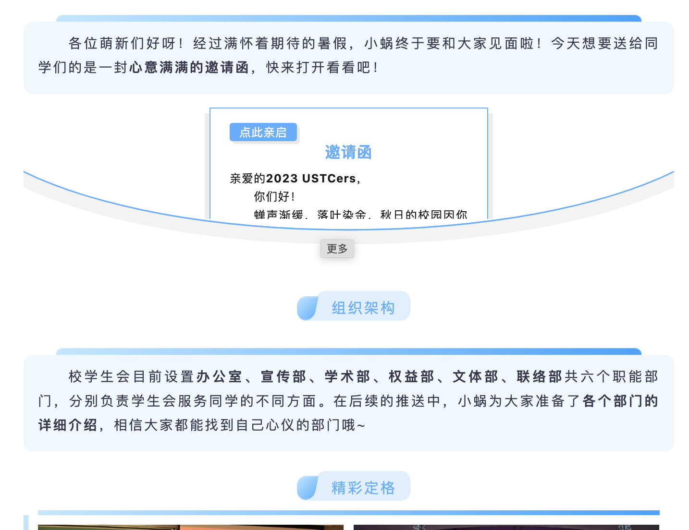
所以我们在这些情况下会使用「交互」组件，创建一个占据屏幕 1/2 或更小的位置放置这些次要文字或者图片。这些组件内部还可以在不改变当前推送阅读位置的前提下继续滑动或者点击展开，如果读者感兴趣则可以自行进入阅读。
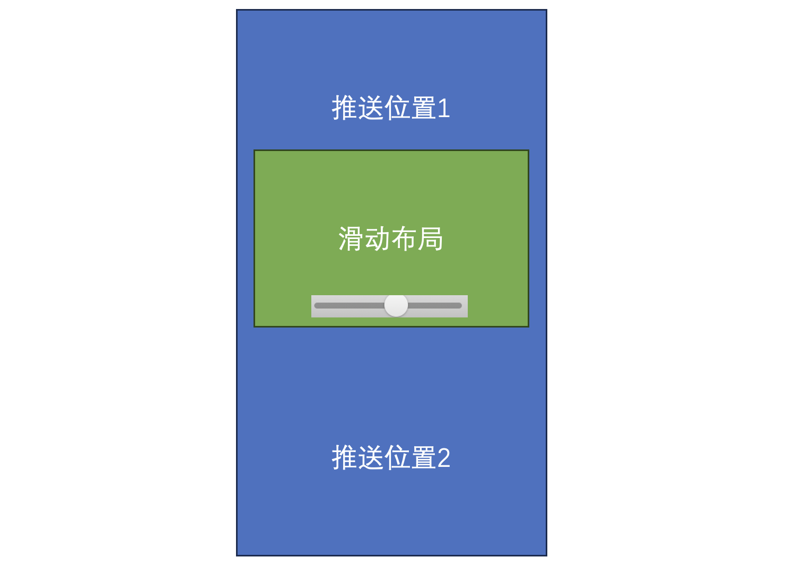
这些方式还可以增加文章与读者的互动，秀米里的滑动布局、SVG布局就可以构建这个互动的桥梁。
滑动布局¶
滑动布局就是在推送中创建了一个「内容中的内容」，你可以把要放进滑动布局的内容像之前你排推送那样照常排版，只需要插入一个滑动布局组件即可。
插入方法：
-
进入推送的编辑界面，找到【图文模板】-【布局】-【基础布局】
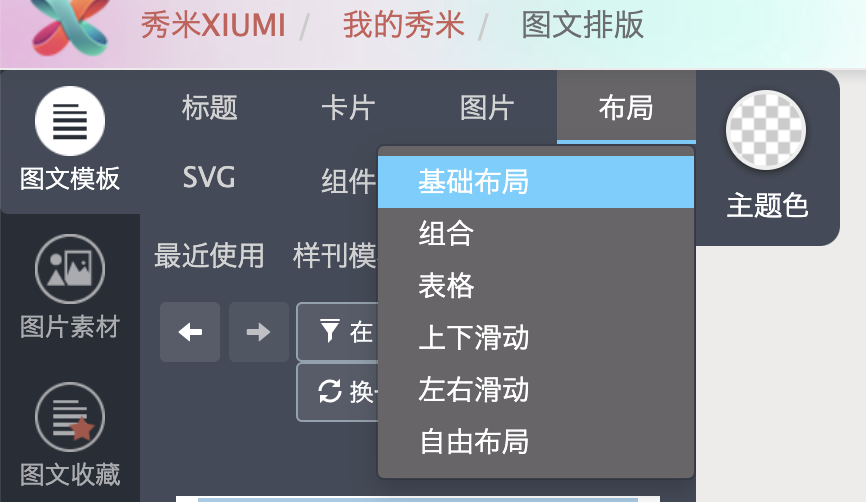
-
找到【左右滑动布局】和【上下滑动布局】的组件，拖到推送中要插入的位置
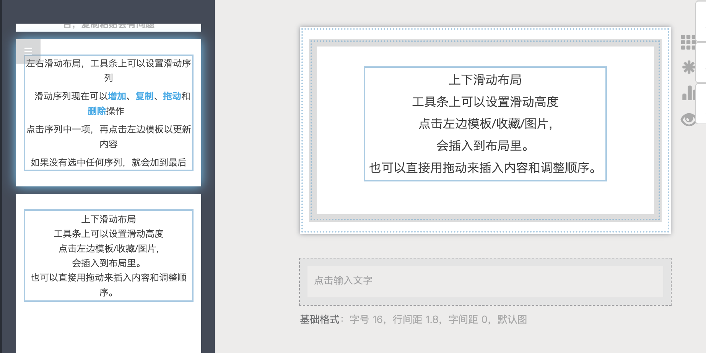
拖入后，会自动进入布局模式，以便对组件内部进行修改。
注：这里文本框也是一个内部组件，主要是提示你如何使用组件，排版完后可删除。组件的显示宽度或高度也是可以调整的，请同学找找看在哪调整？
答案
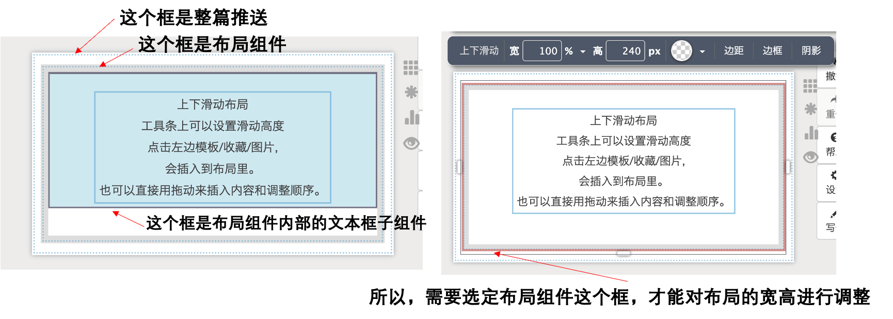
- 推荐将要排入滑动布局组件内的内容先在推送中当作普通组件进行修改，然后再选中复制到剪贴板、进入布局模式，从剪贴板中拖入布局组件中。
布局模式
进入布局模式可以对组件内部进行精细的插入，否则只能在最外层对组件进行堆砌。这里的左右滑动布局和上下滑动布局说到底也只是个组件，要修改内部的内容需要进入布局模式。
如下图所示，在非布局模式，无法将这个组件插入上下布局组件内部。
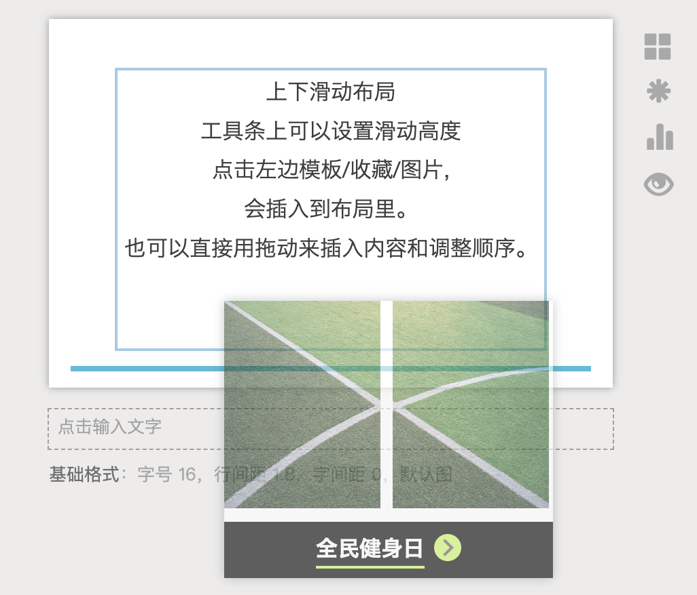
如下图所示，在布局模式，才可以将这个组件插入上下布局组件内部（此图中插入了粗蓝线所示的位置）。
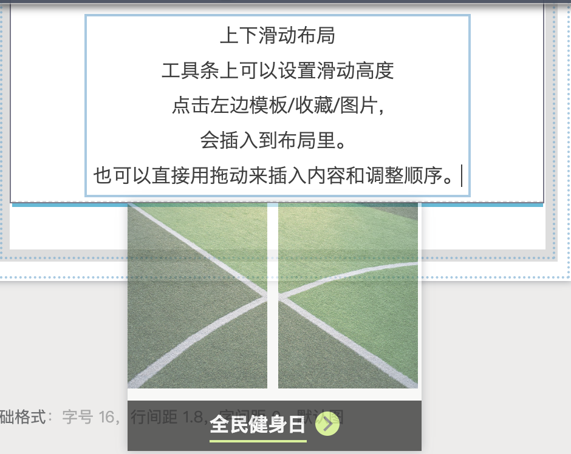
进入布局模式的方法是点击右侧的田字形按钮（点击后会变成九宫格样式），进入布局模式后，退出的方法是点击同一位置的九宫格按钮。
实际上，比较常用的滑动布局是用于排版多个图片的。如在防骗指南推送中，就使用了滑动布局来排版多个类似的诈骗邮件截图。
- 其实这篇排的也有点瑕疵，因为有的图片是卧着的长方形，有的图片是站着的长方形，导致卧着的图片上下出现了大片空白，应该利用图片处理软件将这些图片的宽高比调成一致。
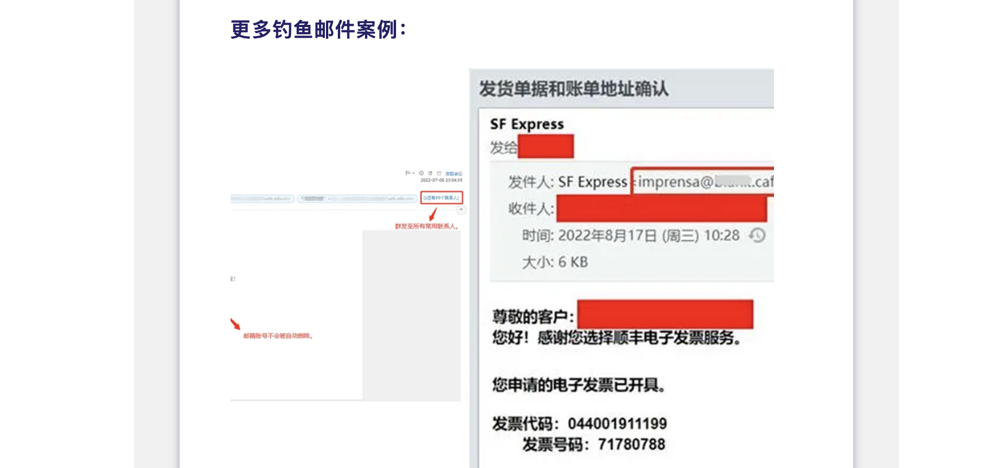
使用左右滑动布局步骤：
- 从【基础布局】内选择【左右滑动布局】进入编辑区
-
点击布局边框选中布局组件，选择【设置滑动序列】，删掉文字提示框，从左侧选择剪贴板中的内容加入；预览效果；更改各列宽度，观察效果
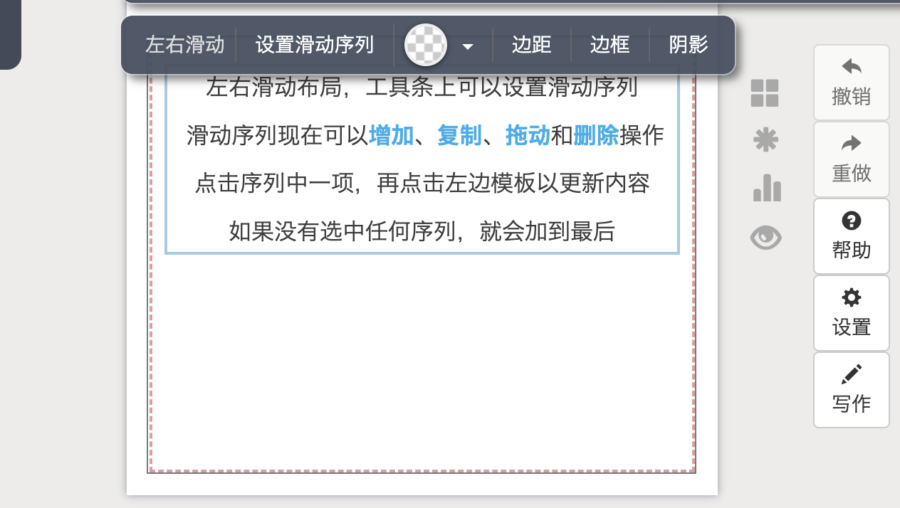
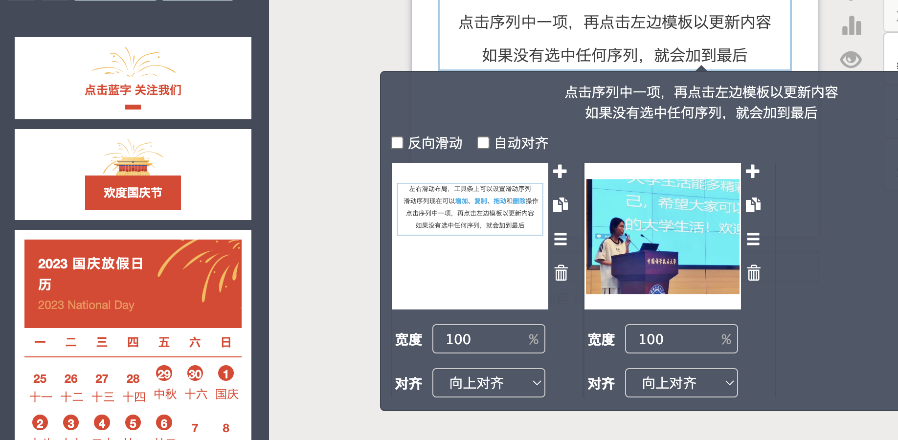
这些滑动布局组件也有创作者创作了更美观的模板组件，在了解了以上基本的操作逻辑之后，修改使用模板组件也能轻松拿下。
SVG 交互组件¶
SVG 是矢量图形，通过代码绘制，在内部添加一些动画标签就可以实现简单的动效或交互。以上是底层的细节，我们没必要了解，这里主要想带大家过一下一些简单的 SVG 交互组件。
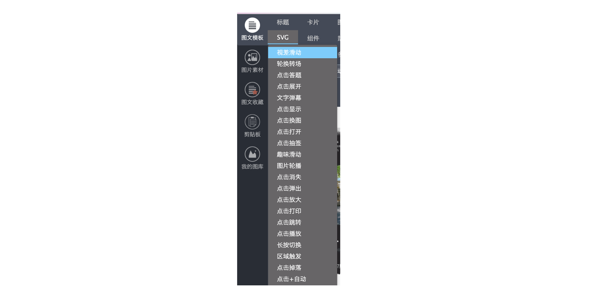
SVG 交互组件模版的位置：【图文模板】-【SVG】
在推送中经常使用到的组件有：点击展开，点击显示（点击答题）等，这里就比较花里胡哨了，我们不一一做讲解，只宏观地说一下一些选用准则：
- 通知类、新闻稿类推送不宜插入太多花里胡哨的交互组件
- 节庆、知识问答、科普等不太正式的推送则可以充分利用交互组件增加阅读的趣味性
- 交互组件模板往往和选择的排版风格不是配套的，所以要尽量选择颜色风格相近的交互组件插入推送中
- 不要选用动画效果太冗长的交互组件，和大家做 PPT 的准则一样，没有阅读者愿意浪费时间在看动画上
注意事项：
- 预览界面就可以快速查看组件的效果了，如果你不能确定组件运行起来具体是什么效果，可以打开预览，扫描二维码在手机上快速查看
- 大部分 SVG 组件只能通过同步的方式传到公众号（以前平台的老方法是复制粘贴，具有一定的局限性，所以我们也不讲）
总结与复习¶
这篇文章主要介绍了微信推送中的其他可选组件，以解决包含大段文字或多幅图片的情况。以下是文章的要点大纲：
-
问题背景：
- 有时微信推送中包含大段文字或多幅图片，可能会导致排版问题和阅读困难。
-
使用交互组件：
- 使用交互组件来创建一个占据屏幕一部分位置的容器，用于放置大段文字或多张图片。
- 这些组件内部可以滑动或点击展开，以便读者查看详细内容。
-
滑动布局：
- 滑动布局用于排版多个图片或其他内容。
- 插入滑动布局组件的方法和使用步骤。
-
SVG 交互组件：
- SVG 交互组件是矢量图形，可以添加简单的动画和交互效果。
- 使用场景和选用准则，包括不宜在正式通知类推送中过多使用、适合节庆、知识问答等不太正式的推送、选择颜色风格相近的组件、避免使用冗长的动画效果等。
- 预览和查看效果的方法。
作业¶
第一节的「迎新晚会主持人招募」Word 文档中穿插了若干幅照片，现在要求不要将这些照片散播在各个小节中，而是：
- 单独开辟一个小节（位置自选），标题为【精彩回顾】
- 在小节内放入一个左右滑动组件（或模板）
- 将所有的照片都放入这个组件中
（撰写：黄瑞轩）